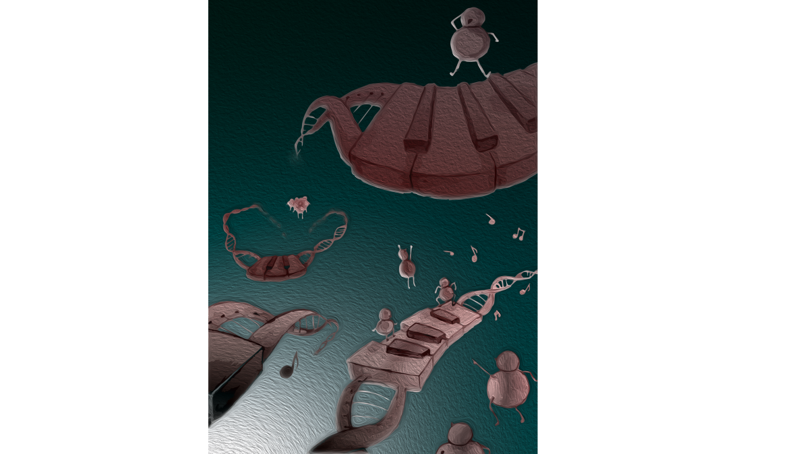

Camera shows relay race on DNA
As new research by Tineke Lenstra and her colleagues shows, our cells still contain many secrets. The researchers made an algorithm which allowed them to create incredibly detailed recordings of what happens inside a cell. And that fact didn't escape the renowned microscopy company Zeiss. As it turns out, there's somewhat of a relay race happening on our DNA, allowing cells to produce the necessary proteins.
We know that our DNA contains information to create the proteins that our body needs. We know that DNA is comparable to a cookbook in this process, containing the recipes from which the cells select a particular recipe, then another, and so on. And we know that molecular kitchen assistants (transcription factors) open up this cookbook so the cooks can read the recipes (genes) and eventually produce new proteins. But these kitchen assistants usually work extremely short shifts: a few seconds each, while a recipe takes several minutes to be read. How is this possible?
Mini shifts
Tineke Lenstra's research group discovered that these kitchen assistants (transcription factors) perform somewhat of a relay race while opening the recipes. That allows them to let the DNA be read long enough, despite their brief shifts that last mere seconds. Their seamless teamwork allows the cell to create enough protein to function properly. Tineke and her colleagues have published their work in Molecular Cell.
Recording genes
That's why they created an algorithm that allows the microscope to track one DNA recipe (gene) in living cells with great precision. Even when a gene is constantly on the move. The instructions in that algorithm can “pin” one particular point in the microscopy imaging, to allow it to track what happens to it. This creates many new opportunities to investigate cells in great detail.
License
That fact didn't escape renowned microscopy company Zeiss. This company licensed the algorithm developed by the NKI researchers so many other researchers can use it as well. Tineke: “It's great that a method that we developed for a highly fundamental research question can be useful to various researchers from across all sorts of disciplines.”
As data-driven platforms become more accessible and ubiquitous, they are expected to empower researchers to image smarter, not just faster, fueling fundamental discoveries in cell and infection biology at the molecular level in physiological context.